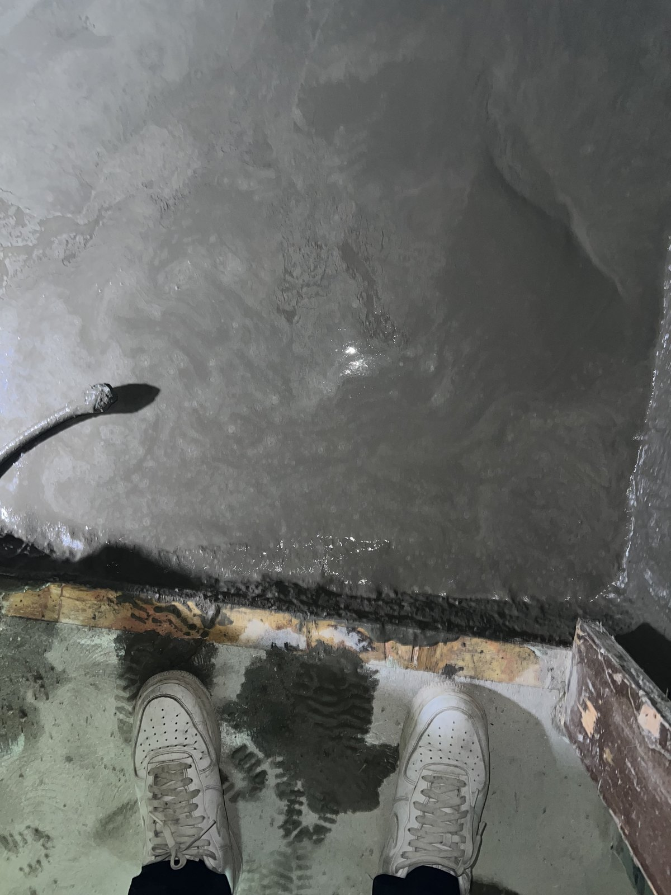
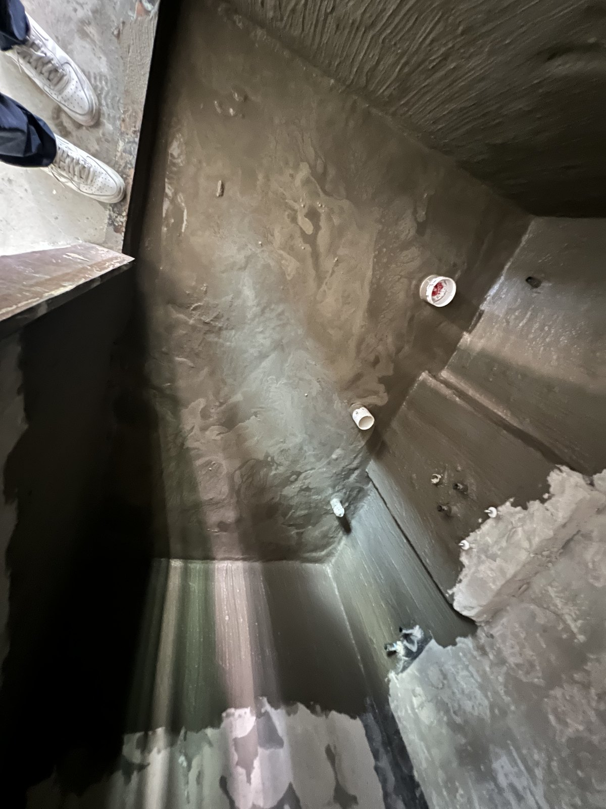

대전 은하수아파트 욕실 1차 방수 — 벽 하단과 배관 주변까지 도포했습니다

현장 앱에 1차 방수 작업으로 기록된 욕실 공정입니다. 타일 뒤에 가려질 바닥과 벽 하단, 배관 주변의 방수층을 실제 사진으로 남겼습니다.
이번 현장 기록
욕실 바닥과 벽 하단에 1차 방수층을 도포한 현장입니다. 현장 앱에 남은 공정명과 촬영일을 기준으로 작업 내용을 정리했습니다.
바닥에서 벽 하단까지 연결
바닥만 바르는 데 그치지 않고 벽 하단까지 방수층을 이어 올렸습니다. 바닥과 벽이 만나는 모서리도 끊기지 않도록 함께 도포했습니다.

배관 주변도 함께 확인
바닥과 벽에서 배관이 나오는 부분은 방수층이 끊기지 않도록 주변까지 도포 상태를 확인했습니다. 사진에는 배관 주변과 모서리의 작업 범위가 함께 보입니다.

마감 전에 사진으로 남깁니다
방수층은 타일과 마감재가 올라가면 확인하기 어렵습니다. 보이지 않게 될 공정이라 다음 작업 전에 도포 범위를 사진으로 기록했습니다.